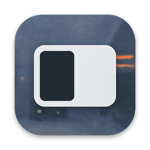

<!doctype html>
<!-- Snappl's exploded view: every piece of the app laid out, for building.
     Not part of the app. Serve this folder (python3 -m http.server -d library)
     and open it. Pieces are HTML renditions of the SwiftUI views; each spec
     names the real view and file. See ../docs/DEVELOPING.md. -->
<html lang="en">
<head>
<meta charset="utf-8">
<meta name="viewport" content="width=device-width, initial-scale=1">
<title>Snappl library</title>
<link rel="stylesheet" href="library.css">
<link rel="stylesheet" href="pieces.css">
<style>
  .swatches { display: flex; flex-wrap: wrap; gap: 16px; padding: 24px; }
  .swatch { width: 132px; font-size: 12px; line-height: 16px; }
  .swatch div { height: 64px; border-radius: 10px; margin-bottom: 8px; box-shadow: inset 0 0 0 1px rgba(0,0,0,0.06); }
  .swatch code { display: block; color: #5b6472; overflow-wrap: anywhere; }
  .type-list { padding: 24px; display: flex; flex-direction: column; gap: 14px; }
  .type-list div { display: flex; align-items: baseline; gap: 24px; }
  .type-list code { width: 200px; flex: none; font-size: 11px; color: #5b6472; }
  .shapes { display: flex; flex-wrap: wrap; gap: 18px; padding: 24px; align-items: flex-end; }
  .shapes figure { margin: 0; text-align: center; font-size: 11px; color: #5b6472; }
  .shapes .r { width: 64px; height: 48px; background: #e9ecf1; box-shadow: inset 0 0 0 1px #c8ccd4; margin-bottom: 6px; }
  .paintings { display: grid; grid-template-columns: repeat(auto-fill, minmax(220px, 1fr)); gap: 16px; padding: 24px; }
  .paintings figure { margin: 0; position: relative; height: 180px; border-radius: 12px; overflow: hidden; background-size: cover; background-position: center; }
  .paintings figcaption { position: absolute; left: 10px; bottom: 10px; }
  .paintings small { position: absolute; right: 10px; top: 10px; font-size: 11px; background: rgba(255,255,255,0.8); padding: 2px 6px; border-radius: 6px; }
  .motion { display: flex; flex-wrap: wrap; gap: 32px; align-items: center; padding: 24px; }
  .motion button { height: 32px; padding: 0 14px; border: 0; border-radius: 8px; background: #171b22; color: #fff; font: 600 12px/1 -apple-system, sans-serif; cursor: pointer; }
  .motion dl { margin: 0; display: grid; grid-template-columns: auto auto; gap: 6px 16px; font-size: 12px; }
  .motion dt { color: #5b6472; }
  .note { padding: 0 24px 20px; font-size: 12px; color: #5b6472; }
  .renders { display: flex; flex-wrap: wrap; gap: 16px; padding: 24px; align-items: flex-start; }
  .renders figure { margin: 0; font-size: 11px; color: #5b6472; }
  .renders img { display: block; border-radius: 8px; box-shadow: 0 0 0 1px rgba(0,0,0,0.08); }
</style>
</head>
<body>
<div id="app"></div>
<script type="module">
  import { createLibrary } from './library.js';
  import { CONTROLS, applyEnv } from './env.js';
  import * as P from './pieces.js';

  const titles = P.ACTIONS.map((a) => a.title);
  const idOf = (title) => P.ACTIONS.find((a) => a.title === title).id;
  const onPainting = (inner, pad = '28px 32px') => P.painted(`<div style="padding:${pad};display:flex;gap:16px;justify-content:center;align-items:center">${inner}</div>`, 'border-radius:14px');
  const SWIFT = 'Sources/Snappl/';

  const COLOURS = [
    ['Ink', '#1d232b', 'Palette.ink (29, 35, 43). Text, glyphs, fills'],
    ['Secondary', '#39414b', 'Palette.secondary. Paragraphs, unselected tabs'],
    ['Muted', '#48515c', 'Palette.muted. Hints, subtitles, artist line'],
    ['Ink fill', '#383d44', 'Pop-up mini display fill (ink 88% flattened)'],
    ['Ink solid', 'rgba(29,35,43,0.88)', 'Switch on, active dot, primary button'],
    ['Glass', 'rgba(255,255,255,0.32)', '.ultraThinMaterial + this tint'],
    ['Wash', 'rgba(255,255,255,0.2)', 'Over every painting'],
    ['Blob mist', '#78a5d7', 'Drifting blob at 0.55'],
    ['Blob rose', '#e8a096', 'Drifting blob at 0.5'],
    ['Blob straw', '#e2cc8c', 'Drifting blob at 0.5'],
    ['Dusk', '#3a4c66', 'App icon only (with #101622, #aabcd0)'],
  ];

  const specs = [
    // Foundations
    { id: 'colour', group: 'Foundations', name: 'Colour', desc: 'The painting is the only colour. The interface is ink and white.', stage: 'light',
      custom: () => `<div class="swatches">${COLOURS.map(([n, v, u]) => `<div class="swatch"><div style="background:${v}"></div><b>${n}</b><code>${v}</code><span>${u}</span></div>`).join('')}</div>`,
      native: { file: SWIFT + 'SettingsWindow.swift', view: 'Palette', notes: 'Pop-up colours live in SnapPopup.swift (ink, inkFill). Icon colours in scripts/make-icon.py.' } },
    { id: 'type', group: 'Foundations', name: 'Type', desc: 'SF Pro at a few sizes. Serif only for the painting’s title.', stage: 'light',
      custom: () => `<div class="type-list sp">${[
        ['22 / 600 / −0.4', 'font-size:22px;font-weight:600;letter-spacing:-0.4px', 'Shortcuts'],
        ['14 / 600 / −0.15', 'font-size:14px;font-weight:600;letter-spacing:-0.15px', 'Left two thirds'],
        ['13 / 500', 'font-size:13px;font-weight:500', 'Cycle sizes on repeat'],
        ['13 / 400', 'font-size:13px', 'Left Half'],
        ['12 / 500', 'font-size:12px;font-weight:500', 'Restore Spectacle defaults'],
        ['12 / 400 muted', 'font-size:12px;color:var(--ink-3)', 'Press a half again for ⅔, then ⅓'],
        ['11.5 / 500', 'font-size:11.5px;font-weight:500', '⌥ ⌘ ←'],
        ['serif 14 italic', 'font:italic 14px var(--serif)', 'Sunny Day'],
      ].map(([k, s, t]) => `<div><code>${k}</code><span style="${s}">${t}</span></div>`).join('')}</div>`,
      code: () => '.font(.system(size: 13, weight: .medium))\n// wall label: .font(.system(size: 14, design: .serif).italic())' },
    { id: 'shape', group: 'Foundations', name: 'Radius and spacing', desc: 'Large soft radii; cards sit 12 apart, rows are 34 tall.', stage: 'light',
      custom: () => `<div class="shapes">${[6, 7, 10, 11, 12, 14, 15, 22, 28].map((r) => `<figure><div class="r" style="border-radius:${r}px"></div>${r}</figure>`).join('')}</div><p class="note">6 keycap · 7 field, selected tab · 10 tab track, wall label · 11 mini display · 12 menu · 14 card · 15 pill · 22 first-run sheet · 28 pop-up. Spacing 3 · 4 · 8 · 10 · 12 · 14 · 16 · 20 · 28.</p>` },
    { id: 'paintings', group: 'Foundations', name: 'Paintings', desc: 'Clarice Beckett, public domain. One per surface, always with its wall label.', stage: 'light',
      custom: () => `<div class="paintings">${[['sunny-day', 'Settings'], ['winter-night', 'First run'], ['moonrise', 'Install window'], ['passing-trams', 'App icon']].map(([k, where]) => `<figure style="background-image:url(${P.PAINTINGS[k][1]})"><small>${where}</small><figcaption>${P.wallLabel(P.PAINTINGS[k][0])}</figcaption></figure>`).join('')}</div>`,
      source: 'Resources/Paintings, Resources/DMG, Resources/Icon' },
    { id: 'ground', group: 'Foundations', name: 'Painted ground', desc: 'Painting, a white wash, and three blurred blobs drifting slowly. Toolbar: Painting, Wash, Blobs.', stage: 'none',
      props: { painting: Object.keys(P.PAINTINGS) },
      render: ({ painting }) => P.painted('<div style="width:240px;height:150px;display:flex;align-items:center;justify-content:center"><span class="sp-glass" style="padding:10px 14px">Glass reads over the wash</span></div>', 'border-radius:14px', painting),
      code: () => 'TimelineView(.animation(minimumInterval: 1/30, paused: reduceMotion)) { … }\n  .frame(width: 600, height: 740)   // full window before\n  .drawingGroup()                   // or the blobs clip',
      native: { file: SWIFT + 'SettingsWindow.swift', view: 'PaintedBackground', notes: 'Blobs drift on 17–31 s sine loops; still under Reduce Motion.' } },

    { id: 'appearance', group: 'Foundations', name: 'Appearance', stage: 'none',
      desc: 'Light, and dark: “the gallery after hours”, with the painting dimmed, smoky glass and off-white ink. Follows the Mac unless Settings → General picks one.',
      custom: (env) => `<div style="display:flex;flex-wrap:wrap;gap:16px">${['light', 'dark'].map((m) => `<div class="theme-${m}" style="flex:1 1 300px;min-width:0">${P.painted(`<div style="padding:22px;display:flex;flex-direction:column;gap:12px;align-items:center">
          <div class="sp-glass sp-list" style="width:100%;max-width:330px">${P.shortcutRow('leftHalf', 'rest')}${P.shortcutRow('rightHalf', 'hover')}${P.shortcutRow('topHalf', 'recording')}</div>
          <div style="display:flex;gap:12px;align-items:center">${P.popup('leftHalf', 1, env.cycling !== false)}<div style="display:flex;flex-direction:column;gap:10px;align-items:flex-start">${P.tabs('Shortcuts')}${P.switchEl(true)}${P.switchEl(false)}${P.pill('Restore defaults')}${P.wallLabel(P.PAINTINGS[env.painting || 'sunny-day'][0])}</div></div>
          <b style="font-size:11px;letter-spacing:.08em;text-transform:uppercase;color:var(--ink-3)">${m}</b></div>`, 'border-radius:14px')}</div>`).join('')}</div>`,
      code: () => 'Theme.ink   // NSColor(name:) resolves light or dark per view\nwindow.appearance = prefs.appearance.nsAppearance   // nil = follow the Mac',
      native: { file: SWIFT + 'Theme.swift', view: 'Theme, AppearanceMode', notes: 'The Settings window and the pop-up panel take their appearance from Preferences.appearance. Dark dims the painting (brightness −0.28) under a dark wash.' } },
    // Icons
    { id: 'glyph', group: 'Icons', name: 'Snap glyph', desc: 'One 16 × 12 icon grid for every action: the screen, with the window’s region filled.', stage: 'light',
      props: { action: titles, size: ['16 × 12', '32 × 24'] }, matrix: ['action'],
      render: ({ action, size }) => P.glyph(P.byId[idOf(action)].region, size === '32 × 24' ? 2 : 1),
      code: ({ action }) => `SnapAction.${idOf(action)}.glyph   // template NSImage, 16 × 12`,
      native: { file: SWIFT + 'SnapAction.swift', view: 'SnapAction.glyph(_:)', notes: 'Outline stroke 1.25 at radius 2.5; fill x = 2.5 + l × 0.11, y = 2.5 + t × 0.07.' } },
    { id: 'app-icon', group: 'Icons', name: 'App icon and menu bar icon', desc: 'The dusk icon for Finder and the Dock; the left-half glyph in the menu bar.', stage: 'light',
      custom: () => `<div class="motion sp"><span class="sp-statusitem open" style="background:rgba(0,0,0,0.08)">${P.glyph([0, 0, 50, 100])}</span></div>`,
      source: 'scripts/make-icon.py → Resources/AppIcon.icns', native: { file: SWIFT + 'AppDelegate.swift', view: 'statusItem.button.image' } },

    // Components
    { id: 'keycap', group: 'Components', name: 'Keycap', desc: 'One cap per key, Apple’s order: ⌃ ⌥ ⇧ ⌘ then the key.', stage: 'none',
      props: { size: ['regular', 'large'], state: ['rest', 'pressed'] }, skip: (p) => p.size === 'regular' && p.state === 'pressed',
      render: ({ size, state }) => onPainting(P.keycaps(size === 'large' ? '⌥⌘←' : '⌃⇧⌘→', { lg: size === 'large', pressed: state === 'pressed' })),
      code: () => 'Keycap(text: cap)   // 22 pt, white 0.72, 0.5 pt ink edge, 1 pt lip',
      native: { file: SWIFT + 'SettingsWindow.swift', view: 'Keycap', notes: 'Large and pressed are designed for first run, not built.' } },
    { id: 'switch', group: 'Components', name: 'Switch', desc: 'The system switch, small, tinted ink. Never a stretched checkbox.', stage: 'none',
      props: { state: ['on', 'off'] }, render: ({ state }) => onPainting(P.switchEl(state === 'on')),
      code: ({ state }) => `Toggle("Open at login", isOn: $value)   // ${state}\n  .labelsHidden().toggleStyle(.switch)\n  .controlSize(.small).tint(Palette.ink)`,
      native: { file: SWIFT + 'SettingsWindow.swift', view: 'GeneralPane', notes: 'System control: macOS draws the real one.' } },
    { id: 'tabs', group: 'Components', name: 'Segmented tabs', desc: 'Switches Settings panes; switching stops any recording.', stage: 'none',
      props: { selected: ['Shortcuts', 'General'] }, render: ({ selected }) => onPainting(P.tabs(selected)),
      code: () => 'Button(t.rawValue) { tab = t }\n  .buttonStyle(TabButtonStyle(selected: t == tab))',
      native: { file: SWIFT + 'SettingsWindow.swift', view: 'TabButtonStyle' } },
    { id: 'glass-card', group: 'Components', name: 'Glass card', desc: 'Every group of controls floats on clear white glass. Toolbar: Glass.', stage: 'none',
      render: () => onPainting(`<div class="sp-glass" style="width:320px">${P.settingRow('Cycle sizes on repeat', 'Press a half again for ⅔, then ⅓', P.switchEl(true))}</div>`),
      code: () => '.glass(radius: 14)   // .ultraThinMaterial + white 0.32, 0.5 pt white edge,\n                     // shadows ink 0.07 r12 y8 and 0.08 r28 y24',
      native: { file: SWIFT + 'SettingsWindow.swift', view: 'Glass (ViewModifier)' } },
    { id: 'pill', group: 'Components', name: 'Glass pill button', desc: 'Secondary and reset actions. Disabled while it would do nothing.', stage: 'none',
      props: { state: ['enabled', 'disabled'] }, render: ({ state }) => onPainting(P.pill('Restore Spectacle defaults', state === 'disabled')),
      code: () => 'Button("Restore Spectacle defaults") { prefs.restoreSpectacleDefaults() }\n  .buttonStyle(GlassPillStyle())\n  .disabled(prefs.isUsingDefaults)',
      native: { file: SWIFT + 'SettingsWindow.swift', view: 'GlassPillStyle' } },
    { id: 'ink-button', group: 'Components', name: 'Ink button', status: 'designed', desc: 'The one action a screen exists for. Designed for first run; no screen uses it yet.', stage: 'none',
      props: { size: ['regular', 'large'] }, render: ({ size }) => onPainting(P.inkButton(size === 'large' ? 'Open Accessibility Settings' : 'Done', size === 'large')),
      native: { file: '(not built)', notes: 'Canvas: Onboarding.dc.html.' } },
    { id: 'shortcut-row', group: 'Components', name: 'Shortcut row', desc: 'One snap in Settings. Click the keys to record; Esc cancels, Delete clears.', stage: 'none',
      props: { state: ['rest', 'hover', 'recording', 'refused', 'empty'], action: ['Left Half', 'Bottom Right', 'Previous Display'] }, matrix: ['state'], width: 360,
      render: ({ state, action }) => onPainting(`<div class="sp-glass sp-list" style="width:340px">${P.shortcutRow(idOf(action), state)}</div>`, '20px'),
      code: ({ action }) => `ShortcutRow(action: .${idOf(action)}, shortcut: prefs.shortcuts[.${idOf(action)}],\n            recorder: recorder) { prefs.setShortcut(nil, for: .${idOf(action)}) }`,
      native: { file: SWIFT + 'SettingsWindow.swift', view: 'ShortcutRow', notes: 'Recording: ShortcutRecorder.swift. A press without ⌘/⌥/⌃ beeps and shows “Add ⌘, ⌥ or ⌃”. The ✕ sits in a fixed slot so keys don’t shift.' } },
    { id: 'setting-row', group: 'Components', name: 'Setting row', desc: 'A title, an optional line of detail, and its control.', stage: 'none',
      props: { setting: ['Appearance', 'Open at login', 'Show snap pop-up', 'Accessibility allowed', 'Accessibility needed'] },
      render: ({ setting }) => onPainting(`<div class="sp-glass" style="width:400px">${{
        'Appearance': P.settingRow('Appearance', 'Follows your Mac unless you pick one', P.appearanceSeg('System')),
        'Open at login': P.settingRow('Open at login', '', P.switchEl(true)),
        'Show snap pop-up': P.settingRow('Show snap pop-up', 'The glass tile that shows where the window went', P.switchEl(true)),
        'Accessibility allowed': P.settingRow('Accessibility', 'Allowed. Snappl can move windows.', ''),
        'Accessibility needed': P.settingRow('Accessibility', 'Needed to move other apps’ windows', P.pill('Open Settings')),
      }[setting]}</div>`, '20px'),
      native: { file: SWIFT + 'SettingsWindow.swift', view: 'GeneralPane.row(_:detail:accessory:)' } },
    { id: 'wall-label', group: 'Components', name: 'Wall label', desc: 'Credits the painting behind a surface: a caption, not a control, so no edge or shadow. The only serif.', stage: 'none',
      props: { painting: Object.keys(P.PAINTINGS) }, render: ({ painting }) => P.painted(`<div style="padding:24px 28px">${P.wallLabel(P.PAINTINGS[painting][0])}</div>`, 'border-radius:14px', painting),
      code: () => 'WallLabel(title: "Sunny Day", artist: "Clarice Beckett")', native: { file: SWIFT + 'SettingsWindow.swift', view: 'WallLabel' } },
    { id: 'menu', group: 'Components', name: 'Menu bar menu', desc: 'The cheat sheet: every snap, its glyph and current shortcut. Drawn by macOS.', stage: 'light',
      props: { state: ['normal', 'no-access', 'taken'] }, render: ({ state }) => P.menu(state),
      code: () => 'NSMenuItem(title: action.title, action: #selector(snapFromMenu(_:)),\n           keyEquivalent: shortcut.keyEquivalent)\nitem.image = action.glyph',
      native: { file: SWIFT + 'AppDelegate.swift', view: 'menuNeedsUpdate(_:)', notes: 'Native NSMenu: system material and highlight. “Allow Snappl in Accessibility…” shows while access is missing.' } },
    { id: 'popup', group: 'Components', name: 'Snap pop-up', desc: 'Appears in the centre of the screen after every snap. Toolbar: Cycle sizes.', stage: 'none',
      props: { action: titles, step: ['½', '⅔', '⅓'] }, matrix: ['action'],
      render: ({ action, step }, env) => onPainting(P.popup(idOf(action), ['½', '⅔', '⅓'].indexOf(step), env.cycling !== false), '24px'),
      code: () => 'popup.show(result)   // centred on result.area; fades in 140 ms,\n                     // holds 0.9 s, fades out 220 ms',
      native: { file: SWIFT + 'SnapPopup.swift', view: 'SnapPopup, PopupView, MiniDisplay', notes: 'NSPanel, non-activating, all Spaces. Repeat presses keep the tile still; only the fill and dots move.' } },

    // Motion
    { id: 'motion', group: 'Motion', name: 'Snap curve', desc: 'UI changes ride one curve. Press the key to cycle the pop-up.', stage: 'none',
      custom: () => onPainting(`<div class="motion" style="padding:0"><div id="motion-popup">${P.popup('leftHalf', 0)}</div>
        <div style="display:flex;flex-direction:column;gap:12px"><button data-demo-cycle>Press ⌥⌘←</button>
        <dl><dt>Curve</dt><dd>cubic-bezier(0.32, 0.72, 0, 1)</dd><dt>Fill and dots</dt><dd>240 ms</dd><dt>Pop-up in / hold / out</dt><dd>140 ms / 0.9 s / 220 ms</dd><dt>Blobs</dt><dd>17–31 s loops</dd><dt>Reduce Motion</dt><dd>fills jump, blobs hold</dd></dl></div></div>`),
      code: () => 'Animation.timingCurve(0.32, 0.72, 0, 1, duration: 0.24)' },

    // App renders
    { id: 'renders', group: 'Screens', name: 'App renders', desc: 'Drawn by the app itself (library/render.sh). The renditions are checked against these.', stage: 'light',
      custom: () => `<div class="renders">${[['settings-shortcuts', 300], ['settings-shortcuts-dark', 300], ['settings-recording', 300], ['settings-recording-dark', 300], ['settings-general', 300], ['settings-general-dark', 300], ['left-2-two-thirds', 200], ['left-2-two-thirds-dark', 200], ['maximise-dark', 200]].map(([n, w]) => `<figure><figcaption>${n}</figcaption></figure>`).join('')}</div><p class="note">Glass is flat in these renders: the app’s snapshot mode can’t draw system materials. Switches look grey because the render window isn’t active.</p>` },
  ];

  const screens = [
    { name: 'Settings · Shortcuts', src: 'screen.html?s=settings-shortcuts', w: 640, h: 780 },
    { name: 'Settings · recording, hover, cleared', src: 'screen.html?s=settings-recording', w: 640, h: 780 },
    { name: 'Settings · General', src: 'screen.html?s=settings-general', w: 640, h: 780 },
    { name: 'Settings · no access', src: 'screen.html?s=settings-no-access', w: 640, h: 780 },
    { name: 'Snap pop-up on a desktop', src: 'screen.html?s=popup', w: 1000, h: 640 },
    { name: 'Menu bar menu', src: 'screen.html?s=menu', w: 1000, h: 560 },
    { name: 'Menu · no access', src: 'screen.html?s=menu-no-access', w: 1000, h: 560 },
    { name: 'First run · ask', src: 'screen.html?s=first-run-ask', w: 640, h: 580, status: 'designed' },
    { name: 'First run · try it', src: 'screen.html?s=first-run-try', w: 640, h: 580, status: 'designed' },
    { name: 'Install window (DMG)', src: 'screen.html?s=install', w: 680, h: 470 },
  ];

  createLibrary({ root: document.getElementById('app'), title: 'Snappl', specs, controls: CONTROLS, apply: (env) => applyEnv(env), screens, frames: [], codeLabel: 'In Swift' });

  // Motion demo: each press steps ½ → ⅔ → ⅓ on the same tile, so the fill animates.
  document.addEventListener('click', (e) => {
    if (!e.target.closest('[data-demo-cycle]')) return;
    const tile = document.querySelector('#motion-popup .sp-popup');
    const step = (Number(tile.dataset.step) + 1) % 3;
    const fresh = new DOMParser().parseFromString(P.popup('leftHalf', step), 'text/html').body.firstElementChild;
    tile.dataset.step = step;
    const [fill, nf] = [tile.querySelector('.fill'), fresh.querySelector('.fill')];
    fill.style.width = nf.style.width;
    tile.querySelector('.name').textContent = fresh.querySelector('.name').textContent;
    tile.querySelectorAll('.sp-dot').forEach((d, i) => d.classList.toggle('on', i === step));
  });
</script>
</body>
</html>
